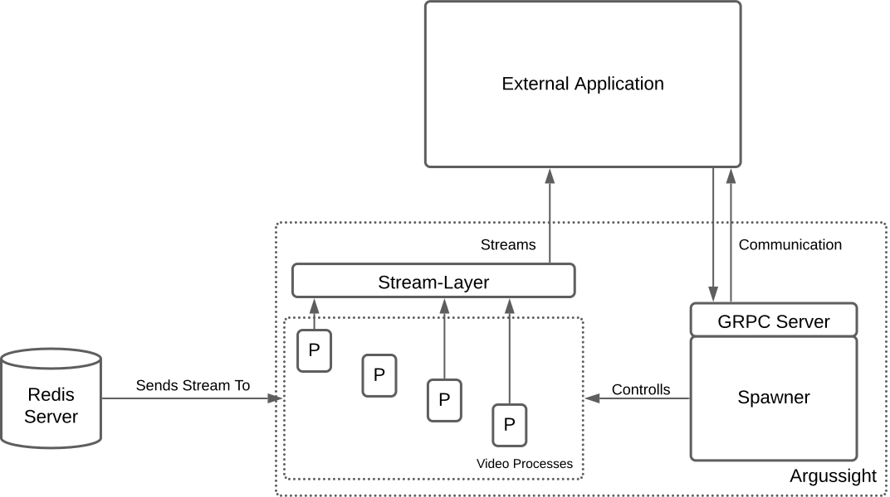

Architectural Overview
Argussight is built around four key components, each playing a vital role in its functionality.
-
Spawner: The core of
Argussight, responsible for controlling, spawning and terminating video processes. -
GRPC Server: Thightly connected to the
Spawner, it handles the communication with a client application. -
Video processes: Processes that are each running a specific video-related task, like generating or modifying camera streams.
-
Stream-Layer: An abstraction layer positioned between streaming processes and external systems. This layer simplifies access to the streams while enhancing security through port abstraction.

Connecting to other Applications
The following section is explained in more detail in our Setup section.
To connect Argussight to your application, you need to establish a connection via the integrated GRPC server for communication between both application and real-time stream modifications and process handling. The created streams can be accessed via websocket connection to the integrated Abstraction-Layer.
Connecting Streams to Processes
To add video processes to your streams, you need to create Redis Pub/Sub channels as input to the processes. For a full explanation on how to connect the input streams to the processes, check out the Vprocess class and our Configurations section.
We recommend using MXCuBE's Video-Streamer to start a Redis Pub/Sub Channel from any camera device or stream.
Benefits of Source Obfuscation
The introduction of the Abstraction-Layer allows source obfuscation for streams, this has the following benefits:
- Enhanced Security: Prevents unauthorized access to the stream sources by exposing only the abstraction layer's port.
- Simplified Client Configuration: Clients need only the abstraction layer's port and endpoint, reducing configuration complexity.
- Stream Source Independence: Allows changes to stream sources without requiring client-side updates.